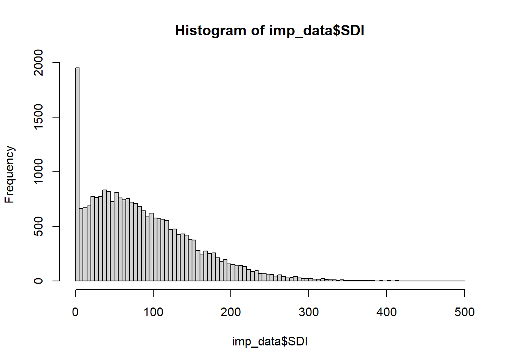

Code
library(tidyverse, quietly = T)
library(esquisse)
library(yaImpute)
library(RSQLite)
library(vegan)
library(randomForest)
library(RSQLite)
library(knitr)
options(scipen = 999)The last imputation qmd was getting too long. This is a continuation.
I intend to explore using categorical variables. It was discussed that I try Ecoregion. I also found a variable for soil moisture, PHYSCLCD. It’s in the cond table.
There is also probably a better way to summarize species. I used species prevalence before, but it wasn’t a great tool. Some species are common in one FPAG and not in another. I’d like to use them all, but it’s not working. There are too many potential spp. There’s about 49 in the new full set. Most of those are rare species. At least when viewed from the full set.
I could play with the idea of using total TD and k = 100 to pull a set of probabilities if regen occurs. Prob being the number of plots with regen out of 100.
I have also not done much to visualize the seedlings vs predictors. I have a different qmd set up for that, but I might combine it here.
I have a pretty good handle on what this data can do. I need to decide what is good enough. At what point can this setup be said to be reasonable.
This is copied from Imputation It is the code to imput with FPAG.
library(tidyverse, quietly = T)
library(esquisse)
library(yaImpute)
library(RSQLite)
library(vegan)
library(randomForest)
library(RSQLite)
library(knitr)
options(scipen = 999)Setup yai
KEEP <- NULL
rm(list = ls()[!ls() %in% KEEP])
# Pulling from my new interim save point
con <- dbConnect(RSQLite::SQLite(), "./attempt_032524.db")
imp_data <- dbGetQuery(con, "select * from imp_data")
zimp_data <- dbGetQuery(con, "select * from regen_only_imp_data")
plots <- dbGetQuery(con, "select * from fvs_plotinit_plot")
plants_ref <- dbGetQuery(con, "select * from plants_ref")
dbDisconnect(con)
rm(con)
load("sp_prevalence.Rdata")
imp_data_FPA <- imp_data |>
mutate(
fpa = str_sub(FPAG, 1, 3)
)
imp_data_FPA <- imp_data_FPA |> mutate(
common = rowSums(imp_data_FPA[,sp_prevalence$common]),
uncommon = rowSums(imp_data_FPA[,sp_prevalence$uncommon]),
rare = rowSums(imp_data_FPA[,sp_prevalence$rare]),
total_TD = rowSums(imp_data_FPA[grep("_TD", names(imp_data_FPA))])
) |>
select(-sp_prevalence$rare, -sp_prevalence$uncommon, -sp_prevalence$common)
imp_data_FPA <- imp_data_FPA |>
relocate(fpa, .after = FPAG)
# I am removing the extra rows to speed up the imputation test.
fpas <- imp_data_FPA |>
filter(
total_TD > 0
)
refs <- rownames(fpas[1:(3*nrow(fpas)/4),])
x <- fpas |> select(1:5)
x <- remove_rownames(x)
x <- column_to_rownames(x, "STANDPLOT_CN")
yfull <- fpas |> select(1, 7:ncol(fpas))
y <- yfull[refs,]
y <- remove_rownames(y)
y <- column_to_rownames(y, "STANDPLOT_CN")
yfull <- remove_rownames(yfull)
yfull <- column_to_rownames(yfull, "STANDPLOT_CN")
k = 10
yrf <- cbind(whatsMax(y[ ,1:(ncol(y)-1)]), y[, ncol(y)])
names(yrf) <- c('Max_SP', 'sp_max_TD', 'total_TD')
t <- fpas |> group_by(FPAG) |>
summarise(n = n()) |>
arrange(desc(n)) |>
filter(n > 120)
keep <- t$FPAG
t2 <- fpas |>
filter(FPAG %in% keep)
t2$FPAG <- as.factor(t2$FPAG)Run yai
refs <- rownames(t2[1:(3*nrow(t2)/4),])
x <- t2 |> select(1:5)
x <- remove_rownames(x)
x <- column_to_rownames(x, "STANDPLOT_CN")
yfull <- t2 |> select(1, 7:ncol(t2))
y <- yfull[refs,]
y <- remove_rownames(y)
y <- column_to_rownames(y, "STANDPLOT_CN")
yfull <- remove_rownames(yfull)
yfull <- column_to_rownames(yfull, "STANDPLOT_CN")
k = 10
yrf <- cbind(whatsMax(y[ ,1:(ncol(y)-1)]), y[, ncol(y)])
names(yrf) <- c('Max_SP', 'sp_max_TD', 'total_TD')
# trf <- yai(x = x, y = yrf, method = "randomForest", k = k)
# save(trf, file = "trf.Rdata")
load("trf.Rdata")
trf_i <- impute(trf, ancillaryData = y)Plot imputed
Reminder that this is the plot from the last page, the last imputation. It is here for reference.
par(mar = c(1,2,3.2,1))
plot(trf_i)
# plot(frf2_set)
# xlim = c(1,10)The highest total_TD in our area is 47827.850. That is just the seedlings. How many tree per square foot are in there?
max_tpa <- 47828
sqft_ac <- 43560
max_tpa/sqft_ac[1] 1.09798I guess 1.09798 trees per square foot isn’t insane. There is going to be a lot of die off. I wonder how many per year FVS will predict?
Check plot 22399018010497_3 the next time I run FVS. This stand is new, it’s not in the last sets I ran.
Note to self to add condid to the database next time
con <- dbConnect(RSQLite::SQLite(), "../../Data/_FIADB_WA.db")
# dbExecute(con, "delete from cond where length(PLT_CN) < 7")
cond <- dbGetQuery(con, "select PLT_CN, CONDID, PHYSCLCD from cond")
dbDisconnect(con)
g <- read_csv("./good_SUB_plots2.csv",
col_types = c("cccci"))
g <- left_join(g, cond, join_by(PLT_CN, CONDID))
g <- g |> mutate(
STANDPLOT_CN = str_c(PLT_CN, "_", SUBP)
) |>
select(-SUBPLOT_CN)
x <- left_join(plots, g, join_by(STANDPLOT_CN))
y <- x |> select(STANDPLOT_CN, PHYSCLCD)
imp_data <- left_join(imp_data, y, join_by(STANDPLOT_CN))
imp_data <- imp_data |> relocate(PHYSCLCD, .after = FPAG)
imp_data_FPA <- imp_data |>
mutate(
fpa = str_sub(FPAG, 1, 3)
)
imp_data_FPA <- imp_data_FPA |> mutate(
common = rowSums(imp_data_FPA[,sp_prevalence$common]),
uncommon = rowSums(imp_data_FPA[,sp_prevalence$uncommon]),
rare = rowSums(imp_data_FPA[,sp_prevalence$rare]),
total_TD = rowSums((imp_data_FPA[grep("_TD", names(imp_data_FPA))]))
) |>
select(-sp_prevalence$rare, -sp_prevalence$uncommon, -sp_prevalence$common)
imp_data_FPA <- imp_data_FPA |>
relocate(fpa, .after = FPAG)
imp_data_FPA <- imp_data_FPA |> relocate(PHYSCLCD, .before = FPAG)
# I am removing the extra rows to speed up the imputation test.
fpas <- imp_data_FPA |>
filter(
total_TD > 0
)
t <- fpas |> group_by(FPAG) |>
summarise(n = n()) |>
arrange(desc(n)) |>
filter(n > 120)
keep <- t$FPAG
t2 <- fpas |>
filter(FPAG %in% keep)
t2$FPAG <- as.factor(t2$FPAG)
t2$PHYSCLCD <- as.factor(t2$PHYSCLCD)n_distinct(t2$FPAG)[1] 26n_distinct(t2$PHYSCLCD)[1] 13198 FPAGs in the full set of imp_data. 44 in t2, after filtering for only those with at least 120 subplots.
15 distinct physcds in imp_data, and t2.
refs <- rownames(t2[1:(3*nrow(t2)/4),])
x <- t2 |> select(1:6)
x <- remove_rownames(x)
x <- column_to_rownames(x, "STANDPLOT_CN")
yfull <- t2 |> select(1, 8:ncol(t2))
y <- yfull[refs,]
y <- remove_rownames(y)
y <- column_to_rownames(y, "STANDPLOT_CN")
yfull <- remove_rownames(yfull)
yfull <- column_to_rownames(yfull, "STANDPLOT_CN")
k = 10
yrf <- cbind(whatsMax(y[ ,1:(ncol(y)-1)]), y[, ncol(y)])
names(yrf) <- c('Max_SP', 'sp_max_TD', 'total_TD')
# rf_phys <- yai(x = x, y = yrf, method = "randomForest", k = k)
# save(rf_phys, file = "rf_phys.Rdata")
load("rf_phys.Rdata")plot(rf_phys, vars = yvars(rf_phys))
# plot(rf, vars = yvars(rf))
trf_i <- impute(trf, ancillaryData = y)
rf_phys_i <- impute(rf_phys, ancillaryData = y)Adding Physcd didn’t help as much as I thought it would, but it did do something. I need to compare the numbers.
par(mar = c(1,2,3.2,1))
plot(rf_phys_i)
plot(trf_i)
# plot(frf2_set)
# xlim = c(1,10)

trf_rmsd <- rmsd.yai(trf_i)
ph_rmsd <- rmsd.yai(rf_phys_i)
ph_rmsd <- rownames_to_column(ph_rmsd, "spec")
trf_rmsd <- trf_rmsd |> rownames_to_column("spec")
z <- left_join(ph_rmsd, trf_rmsd, by = "spec",
suffix = c(".ph", ".trf"))
z <- z |> mutate(diff = rmsd.ph - rmsd.trf)
z| spec | rmsd.ph | rmsd.trf | diff |
|---|---|---|---|
| PSME_TD | 297.5946 | 266.1156 | 31.47904 |
| ABLA_TD | 384.9643 | 354.0954 | 30.86889 |
| ABAM_TD | 410.7614 | 380.8726 | 29.88885 |
| TSHE_TD | 720.9237 | 673.2647 | 47.65899 |
| common | 713.6788 | 663.5073 | 50.17154 |
| uncommon | 459.7389 | 427.1661 | 32.57280 |
| rare | 228.7634 | 217.4765 | 11.28688 |
| total_TD | 1143.1015 | 996.9510 | 146.15054 |
The imputation with physcode is lower in rmsd across the board.
I am not sure what the distance is for RF, but I know it needs to be minimized.
I was testing out if I could get the FVS variables without running FVS. It took a while for FVS to run the 25k plots I selected. So, I was trying to get the same variables straight from FIA while waiting to start the last set of imputations.
library(tidyverse)
library(RSQLite)
library(readxl)
library(writexl)
options(scipen = 999)con <- dbConnect(RSQLite::SQLite(), "C:/RxFire/Data/_FIADB_WA.db")
standlist <- read_csv("C:/RxFire/Regen/Regen_Notes/standlist03242024.csv",
col_types = c("cccc"))
n_distinct(standlist$STAND_CN)
STAND_CN <- NULL
STAND_CN <- str_c("'", unique(standlist$STAND_CN), "'")
STAND_CN <- str_flatten_comma(STAND_CN)
# COND::BALIVE Basal area per acre of livetrees
subcond <- dbGetQuery(con, str_c(
"select * from subp_cond where PLT_CN IN (", STAND_CN, ")"))
cond <- dbGetQuery(con, str_c(
"select * from cond where PLT_CN IN (", STAND_CN, ")"))
# P2VEG_STR::COVER_PCT, NT AND TT ARE TREES.
veg <- dbGetQuery(con, str_c(
"select * from P2VEG_SUBP_STRUCTURE where PLT_CN IN (", STAND_CN, ")"))
tree <- dbGetQuery(con, str_c(
"select * from FVS_TREEINIT_PLOT where STAND_CN IN (", STAND_CN, ")"))
subcond <- subcond |>
mutate(
STANDPLOT_CN = str_c(as.character(PLT_CN), "_", as.character(SUBP))
)
s <- subcond |> select(PLT_CN, STANDPLOT_CN, SUBP, CONDID, )
c <- left_join(s, cond, join_by(PLT_CN, CONDID))
c2 <- c |> select(STANDPLOT_CN, BALIVE) |> drop_na()
veg <- veg |>
mutate(
STANDPLOT_CN = str_c(as.character(PLT_CN), "_", as.character(SUBP))
)v <- veg |> filter(LAYER == 5)
v <- v |> filter(GROWTH_HABIT_CD == "TT")
v2 <- v |> group_by(STANDPLOT_CN) |>
summarise(CC = sum(COVER_PCT))p. 183 FVS essentials.
\[ SDI = \sum (TPA_i (\frac{DBH}{10})^{1.605}) \] TPA_i is tpa for a tree record.
SDI is the sum of Trees per acre times the DBH for those trees, divided by ten to the power of 1.605.
DBH and tpa are in the tree table.
x <- standlist |> select(STANDPLOT_CN)
t <- left_join(x, tree, by = "STANDPLOT_CN")
c <- left_join(x, cond, by = "STANDPLOT_CN")
v <- left_join(x, veg, by = "STANDPLOT_CN")
tpa <- t |>
mutate(sdi = (TREE_COUNT * ((DIAMETER/10)^1.605)))
sdi <- tpa[tpa$HISTORY == 1, ] |> group_by(STANDPLOT_CN) |>
summarize(SDI = sum(sdi)) |> drop_na()y <- left_join(x, sdi, by = "STANDPLOT_CN")
y <- left_join(y, c2, by = "STANDPLOT_CN")
y <- left_join(y, v2, by = "STANDPLOT_CN")Canopy cover is not well predicted by the p2veg tables.
The warning about zero distances is in reference to plots that have the same predictors. For example, if two or more plots share cc = 1, ba = 2, sdi = 10, they are separated by zero distance. Given the way this data was made, I am surprised that there aren’t more sets with the same predictors.
kable(summary(imp_data[, 2:4]))| CC | BA | SDI | |
|---|---|---|---|
| Min. : 0.00 | Min. : 0.00 | Min. : 0.00 | |
| 1st Qu.: 9.00 | 1st Qu.: 15.36 | 1st Qu.: 35.00 | |
| Median :18.00 | Median : 33.84 | Median : 75.00 | |
| Mean :20.28 | Mean : 40.11 | Mean : 86.91 | |
| 3rd Qu.:29.00 | 3rd Qu.: 58.47 | 3rd Qu.:126.00 | |
| Max. :97.00 | Max. :226.84 | Max. :497.00 |
Canopy cover is an integer from 0:100, SDI is an int from 0 to 500 (in this set). Just them being integers makes them more likely to overlap.
hist(imp_data$CC, breaks = 100)
hist(imp_data$BA, breaks = 100)
hist(imp_data$SDI, breaks = 100)

All of them skew right and have lots of zeroes.
Here, I was trying to figure out some code to pull the sets of data with zero distance between predictors out of the data. The correct answer was to use unique on the set of predictors after setting standplot_cn to rownames.
# 527 zero distances of 1884
imp_zx <- imp_data_FPA |>
filter(CC != 0 & BA != 0 & SDI > 1)
# 40 zero distances. It isn't in the ancillary data, but that did help.
imp_zx <- imp_zx |>
filter(total_TD > 0)
# 15
imp_zx <- imp_zx |>
filter(CC > 1 & BA > 1 & SDI > 1)
imp_zx <- imp_data_FPA |>
filter(CC != BA & CC != SDI & BA != SDI)
imp_zx <- imp_data_FPA |>
filter(!near(CC, BA, tol = .01) & !near(CC, SDI, tol = .01))Of the 1884 zero distances:
This is the code to run the imputation as usual, with all the data.
It gives the errors, 1884 zero distances of 24621 references were set to 0.0…
imp_ztest <- imp_data_FPA
X <- imp_ztest |> select(STANDPLOT_CN, CC, BA, SDI)
X <- remove_rownames(X)
X <- column_to_rownames(X, "STANDPLOT_CN")
Y <- imp_ztest |> select(STANDPLOT_CN, PSME_TD, common, total_TD)
Y <- remove_rownames(Y)
Y <- column_to_rownames(Y, "STANDPLOT_CN")
mal <- yai(x = X, y = Y, method = "mahalanobis", k = k)
msn <- yai(x = X, y = Y, method = "msn", k = k)
ewz <- errorStats(mal, msn)
scaled_ewz <- errorStats(mal, msn, scale = T)Here I am extracting the plots where there is zero distance in the predictors from the yai object, then joining the imputation data to those plots.
# msn$neiDstRefs rows of references with the distance to k neighbors
## This run is had everything as a reference.
msn_0dist <- msn$neiDstRefs |> as.data.frame()
# Selecting only distances for the k = 1 neighbor.
msn_0dist <- msn_0dist[msn_0dist$Dst.k1 == 0,]
# Getting the cns of those NN.
msn_0dist$STANDPLOT_CN <- row.names(msn_0dist)
cns_0d <- msn_0dist |> select(STANDPLOT_CN)
# Joining the imp data to the zero dist NN
test_all0s <- left_join(cns_0d, imp_ztest, by = "STANDPLOT_CN")
test_all0s |> arrange(desc(BA)) |> head()| STANDPLOT_CN | CC | BA | SDI | PHYSCLCD | FPAG | fpa | PSME_TD | ABLA_TD | ABAM_TD | TSHE_TD | common | uncommon | rare | total_TD |
|---|---|---|---|---|---|---|---|---|---|---|---|---|---|---|
| 346864308489998_1 | 6 | 17.66684 | 23 | 12 | CDS7 | CDS | 0 | 0 | 0 | 0 | 0 | 0 | 0 | 0 |
| 40220510010497_1 | 6 | 17.66684 | 23 | 12 | CPG2 | CPG | 0 | 0 | 0 | 0 | 0 | 0 | 0 | 0 |
| 22827756010497_1 | 8 | 17.36355 | 23 | 12 | CPS2 | CPS | 0 | 0 | 0 | 0 | 0 | 0 | 0 | 0 |
| 24208121010900_3 | 8 | 17.36355 | 23 | 11 | CERR | CER | 0 | 0 | 0 | 0 | 0 | 0 | 0 | 0 |
| 484819578489998_2 | 5 | 15.31406 | 21 | 22 | CCF2 | CCF | 0 | 0 | 0 | 0 | 0 | 0 | 0 | 0 |
| 8625909010901_2 | 5 | 15.31406 | 21 | 22 | CD | CD | 0 | 0 | 0 | 0 | 0 | 0 | 0 | 0 |
kable(summary(test_all0s[,2:4]))| CC | BA | SDI | |
|---|---|---|---|
| Min. :0.0000 | Min. : 0.000000 | Min. : 0.000 | |
| 1st Qu.:0.0000 | 1st Qu.: 0.000000 | 1st Qu.: 0.000 | |
| Median :0.0000 | Median : 0.008177 | Median : 0.000 | |
| Mean :0.6279 | Mean : 1.057479 | Mean : 1.739 | |
| 3rd Qu.:1.0000 | 3rd Qu.: 1.029340 | 3rd Qu.: 2.000 | |
| Max. :8.0000 | Max. :17.666840 | Max. :34.000 |
The above data frame shows that the zero distances are where the 3-D vector of
predictors overlap. Adding more predictors would help.
I will now run the imputation data without those zero dist. NN.
This code runs the distance matrices without zero distances by using unique().
imp_ztest <- imp_data_FPA
b <- nrow(imp_ztest)
# selecting predictors only
X <- imp_ztest |> select(STANDPLOT_CN, CC, BA, SDI)
# Moving cns to get unique predictors
X <- remove_rownames(X)
X <- column_to_rownames(X, "STANDPLOT_CN")
X <- X |> unique()
a <- nrow(X)
# Before and after unique
b[1] 24621a[1] 22969print(str_c("before minus after unique = ", (b-a)))[1] "before minus after unique = 1652"# Finding cns where predictors are unique
x <- X
x <- rownames_to_column(x, "STANDPLOT_CN") |> select(STANDPLOT_CN)
# Filtering out the zero distances.
imp_zx <- left_join(x, imp_ztest, by = "STANDPLOT_CN")
# Selecting ancillary data.
Y <- imp_zx |> select(STANDPLOT_CN, PSME_TD, common, total_TD)
Y <- remove_rownames(Y)
Y <- column_to_rownames(Y, "STANDPLOT_CN")
mal <- yai(x = X, y = Y, method = "mahalanobis", k = k)
msn <- yai(x = X, y = Y, method = "msn", k = k)
ewoz <- errorStats(mal, msn)
scaled_ewoz <- errorStats(mal, msn, scale = T)| mal.see | mal.rmmsd0 | mal.mlf | |
|---|---|---|---|
| PSME_TD | 221.8865 | 151.03480 | 194.4938 |
| common | 477.7440 | 621.49559 | 187.3791 |
| total_TD | 842.9472 | 71.48992 | 841.4301 |
| mal.rmsd | mal.rmsdlg | mal.sei | mal.dstc | |
|---|---|---|---|---|
| PSME_TD | 321.9114 | 398.3118 | 303.6794 | 284.2806 |
| common | 523.8155 | 596.5675 | 285.0513 | NA |
| total_TD | 428.8956 | 534.1788 | 425.9061 | 422.8955 |
| msn.rmsd | msn.rmsdlg | msn.sei | msn.dstc | |
|---|---|---|---|---|
| PSME_TD | 261.1057 | 330.3856 | 238.2654 | 212.9898 |
| common | 575.4805 | 679.7284 | 371.5500 | NA |
| total_TD | 756.9970 | 944.6343 | 755.3073 | 753.6138 |
Of the 1884 zero distances of 24621 references in the original data, 1652 of those rows were not unique.
t <- test_all0s |> mutate(t = round(CC + BA + SDI, 4))
hist(t$t, breaks = 209)
Distribution of t, the sum of CC, BA, and SDI. Trying to see where the values of matching matching vectors exist. Most of the overlap is below 10 and zero. Meaning the values of CC + are low.
t2 <- t |> filter(CC == 0 & BA == 0 & SDI == 0)
# tt <- t |> filter(CC != 0 & BA != 0 & SDI != 0)
t <- t |> filter(t>0)
n_distinct(t$t)[1] 224hist(t$t, breaks = 50)There are 224 distinct values (above zero) on 1205 plots. The rest of the 1884 plots were zero across the board, no BA, no trees in the over story or seedlings.
t3 <- t |> group_by(t) |>
summarise(
n_plots_per_t = n()) |>
arrange(desc(n_plots_per_t))
kable(summary(t[t$t < 1, c(1:4, 14:15)]))| STANDPLOT_CN | CC | BA | SDI | rare | total_TD | |
|---|---|---|---|---|---|---|
| Length:591 | Min. :0 | Min. :0.004089 | Min. :0 | Min. : 0.00 | Min. : 74.97 | |
| Class :character | 1st Qu.:0 | 1st Qu.:0.004089 | 1st Qu.:0 | 1st Qu.: 0.00 | 1st Qu.: 74.97 | |
| Mode :character | Median :0 | Median :0.008177 | Median :0 | Median : 0.00 | Median :149.93 | |
| NA | Mean :0 | Mean :0.012418 | Mean :0 | Mean : 22.45 | Mean :227.69 | |
| NA | 3rd Qu.:0 | 3rd Qu.:0.016355 | 3rd Qu.:0 | 3rd Qu.: 0.00 | 3rd Qu.:299.86 | |
| NA | Max. :0 | Max. :0.040887 | Max. :0 | Max. :749.65 | Max. :749.65 |
In the set of 1205 where the combined preds are above zero and less than one, there are 591 plots and only BA has values.
# The number of rows
nrow(t[t$t < 1, c(2:4, 14:15)])[1] 591The number of rows between 0 and 1 is 591.
kable(head(t3, n = 10))| t | n_plots_per_t |
|---|---|
| 0.0041 | 230 |
| 0.0082 | 96 |
| 0.0123 | 64 |
| 0.0164 | 54 |
| 0.0204 | 51 |
| 0.0245 | 32 |
| 0.0286 | 25 |
| 0.0327 | 18 |
| 0.0368 | 11 |
| 1.0450 | 11 |
There are 230 plots where t == 0.0041. 0.0368 & 1.0450 both have 11 plots. For each set of t’s that match, like 0.0368 & 1.0450, there are n_ts_per_nplots.
plot(t3$n_plots_per_t, t3$t)
The majority of zero distances plots only share a small number of values.
tt <- t3 |> group_by(n_plots_per_t) |>
summarize(n_ts_per_nplots = n()) |>
mutate(n_that_match = n_ts_per_nplots * n_plots_per_t) |>
arrange(desc(n_that_match))
head(tt, n = 10)| n_plots_per_t | n_ts_per_nplots | n_that_match |
|---|---|---|
| 2 | 128 | 256 |
| 230 | 1 | 230 |
| 3 | 38 | 114 |
| 96 | 1 | 96 |
| 4 | 20 | 80 |
| 5 | 15 | 75 |
| 64 | 1 | 64 |
| 54 | 1 | 54 |
| 51 | 1 | 51 |
| 6 | 7 | 42 |
sum(tt$n_that_match)[1] 1205df <- t |> filter(t == 0.0041)
summary(df) STANDPLOT_CN CC BA SDI PHYSCLCD
Length:230 Min. :0 Min. :0.004089 Min. :0 Min. :11.00
Class :character 1st Qu.:0 1st Qu.:0.004089 1st Qu.:0 1st Qu.:12.00
Mode :character Median :0 Median :0.004089 Median :0 Median :21.00
Mean :0 Mean :0.004089 Mean :0 Mean :17.57
3rd Qu.:0 3rd Qu.:0.004089 3rd Qu.:0 3rd Qu.:23.00
Max. :0 Max. :0.004089 Max. :0 Max. :32.00
FPAG fpa PSME_TD ABLA_TD
Length:230 Length:230 Min. : 0.00 Min. : 0.000
Class :character Class :character 1st Qu.: 0.00 1st Qu.: 0.000
Mode :character Mode :character Median : 0.00 Median : 0.000
Mean :14.67 Mean : 6.193
3rd Qu.: 0.00 3rd Qu.: 0.000
Max. :74.97 Max. :74.965
ABAM_TD TSHE_TD common uncommon
Min. : 0.000 Min. : 0.0000 Min. : 0.00 Min. : 0.00
1st Qu.: 0.000 1st Qu.: 0.0000 1st Qu.: 0.00 1st Qu.: 0.00
Median : 0.000 Median : 0.0000 Median : 0.00 Median : 0.00
Mean : 1.956 Mean : 0.3259 Mean :34.22 Mean : 8.80
3rd Qu.: 0.000 3rd Qu.: 0.0000 3rd Qu.:74.97 3rd Qu.: 0.00
Max. :74.965 Max. :74.9653 Max. :74.97 Max. :74.97
rare total_TD t
Min. : 0.00 Min. :74.97 Min. :0.0041
1st Qu.: 0.00 1st Qu.:74.97 1st Qu.:0.0041
Median : 0.00 Median :74.97 Median :0.0041
Mean : 8.80 Mean :74.97 Mean :0.0041
3rd Qu.: 0.00 3rd Qu.:74.97 3rd Qu.:0.0041
Max. :74.97 Max. :74.97 Max. :0.0041 Of those 230 that share one value of t, there is no variation in predictors. There is variation at the species level, but not at the total tree level. These three predictors seem to be good at predicting the total tree density, but not the species present.
Following are comparisons between the yai objects and distances for a yai with zeros and one without.
# ewoz is the second row
malw <- rbind(ewz$mal, ewoz$mal)
# malw
msnw <- rbind(ewz$msn, ewoz$msn)
commonw <- rbind(ewz$common, ewoz$common)
row.names(malw) <- c("PSME_TD", "common", "total_TD", "PSME_TD_wo0", "common_wo0", "total_TD_wo0")
malw <- rownames_to_column(malw, "source")
row.names(msnw) <- c("PSME_TD", "common", "total_TD", "PSME_TD_wo0", "common_wo0", "total_TD_wo0")
msnw <- rownames_to_column(msnw, "source")
row.names(commonw) <- c("PSME_TD", "common", "total_TD", "PSME_TD_wo0", "common_wo0", "total_TD_wo0")
commonw <- rownames_to_column(commonw, "source")malw |> arrange(source)| source | mal.rmsd | mal.rmsdlg | mal.sei | mal.dstc |
|---|---|---|---|---|
| PSME_TD | 312.0201 | 338.3963 | 297.0426 | 281.2686 |
| PSME_TD_wo0 | 321.9114 | 398.3118 | 303.6794 | 284.2806 |
| common | 510.7842 | 524.6831 | 472.1028 | 429.9554 |
| common_wo0 | 523.8155 | 596.5675 | 285.0513 | NA |
| total_TD | 413.7486 | 455.0015 | 413.7486 | 413.7486 |
| total_TD_wo0 | 428.8956 | 534.1788 | 425.9061 | 422.8955 |
For mahalonobis (read as euclidian distance), the yai without zeroes was higher in all categories except for common trees standard error of imputation. I don’t know why the distance component is NA.
msnw |> arrange(source)| source | msn.rmsd | msn.rmsdlg | msn.sei | msn.dstc |
|---|---|---|---|---|
| PSME_TD | 264.9361 | 285.4914 | 247.1212 | 227.9180 |
| PSME_TD_wo0 | 261.1057 | 330.3856 | 238.2654 | 212.9898 |
| common | 625.0536 | 676.6855 | 593.8624 | 560.9394 |
| common_wo0 | 575.4805 | 679.7284 | 371.5500 | NA |
| total_TD | 803.3972 | 869.4654 | 803.3972 | 803.3972 |
| total_TD_wo0 | 756.9970 | 944.6343 | 755.3073 | 753.6138 |
For msn (canonical correlation) without zeros was generally lower, except root mean square error of the observations with larger distances (rmsdlg) and common trees SEI.
commonw |> arrange(source)| source | mal.see | mal.rmmsd0 | mal.mlf |
|---|---|---|---|
| PSME_TD | 215.3464 | 135.0722786 | 193.0073 |
| PSME_TD_wo0 | 221.8865 | 151.0348025 | 194.4938 |
| common | 466.4442 | 275.7514975 | 423.7343 |
| common_wo0 | 477.7440 | 621.4955878 | 187.3791 |
| total_TD | 819.0953 | 0.0000003 | 819.0953 |
| total_TD_wo0 | 842.9472 | 71.4899191 | 841.4301 |
For the common stats that are used to compute the others, model lack of fit is much better for common trees. There is also an expectedly large difference for rmsd near 0. rmmsd0 is a measure of variability, pure error, measurement error, and bias. Bias is the squraed average distance compoents in that group.
For each set, the total_TDs are the same. That is interesting. Explore the tree values for combinations of cc, ba, and sdi. Do the predictors do well at finding total td, but not per species.
This was a test to see what they look like when scaled.
With zeroes
Without zeroes
| mal.see | mal.rmmsd0 | mal.mlf | |
|---|---|---|---|
| PSME_TD | 0.9878199 | 0.6195928 | 0.8853476 |
| common | 0.9762440 | 0.5771339 | 0.8868543 |
| total_TD | 0.8234868 | 0.0000000 | 0.8234868 |
| mal.see | mal.rmmsd0 | mal.mlf | |
|---|---|---|---|
| PSME_TD | 0.9872021 | 0.6719737 | 0.8653286 |
| common | 0.9756580 | 1.2692303 | 0.3826693 |
| total_TD | 0.8230136 | 0.0697994 | 0.8215324 |
kable(scaled_ewz$mal)| mal.rmsd | mal.rmsdlg | mal.sei | mal.dstc | |
|---|---|---|---|---|
| PSME_TD | 1.4312740 | 1.552265 | 1.3625703 | 1.2902132 |
| common | 1.0690455 | 1.098135 | 0.9880873 | 0.8998749 |
| total_TD | 0.4159669 | 0.457441 | 0.4159669 | 0.4159669 |
kable(scaled_ewoz$mal)| mal.rmsd | mal.rmsdlg | mal.sei | mal.dstc | |
|---|---|---|---|---|
| PSME_TD | 1.4322261 | 1.7721414 | 1.3511096 | 1.2648015 |
| common | 1.0697461 | 1.2183216 | 0.5821373 | NA |
| total_TD | 0.4187533 | 0.5215468 | 0.4158345 | 0.4128951 |
kable(scaled_ewz$msn)| msn.rmsd | msn.rmsdlg | msn.sei | msn.dstc | |
|---|---|---|---|---|
| PSME_TD | 1.2152940 | 1.309583 | 1.1335748 | 1.0454876 |
| common | 1.3082054 | 1.416268 | 1.2429238 | 1.1740178 |
| total_TD | 0.8077045 | 0.874127 | 0.8077045 | 0.8077045 |
kable(scaled_ewoz$msn)| msn.rmsd | msn.rmsdlg | msn.sei | msn.dstc | |
|---|---|---|---|---|
| PSME_TD | 1.161693 | 1.4699291 | 1.0600742 | 0.9476197 |
| common | 1.175257 | 1.3881544 | 0.7587867 | NA |
| total_TD | 0.739096 | 0.9222961 | 0.7374462 | 0.7357927 |
Note to self, the magrittr pipe and native pipe are different. The magrittr pipe allows for substituting the position of the left hand side argument on the right with a “.”. The native pipe doesn’t. Curly braces overide the lhs to first argument rule. There is also an pipe called the exposition pipe, %$%.